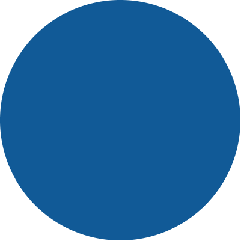

Hello World!

Olá Mundo! Este site, foi a maneira que encontrei para exercitar um pouco alguns cursos que fiz de html, css e um pouco de minha criatividade.
Espero que goste!
Administração
O momento em minha vida em que eu, nascido em Sorocaba, onde morei até os 6 anos, retorno a minha cidade natal, para iniciar uma faculdade. Foi aí que deixei de ser o paulista no Rio de Janeiro, e passei a ser conhecido como o Rio, ou o Carioca, que de carioca tinha apenas o sotaque e uma mãe que morava na praia, sendo grande motivo de busca (especialmente em datas próximas ao carnaval).
Iniciei os estudos em Administração pela UFSCar e busco aproveitar cada um dos conhecimentos e experiências adquiridas na faculdade, onde me formei em 2017.
Entendo a amplitude do curso e a importância do empreendedorismo em qualquer carreira, iniciando bastante determinado em adentrar o mundo corporativo, foi de grande aprendizado iniciar em uma das melhores universidades da América Latina.
Análise e Desenvolvimento de Sistemas
Trabalhando já há alguns anos no setor de logística em uma grande empresa, comecei a perceber o quanto gostava de criar planilhas em Excel e VBA, KPI's, relatórios, ferramentas de análise, dashboards, chegando a ser indicado por minha chefia a cursos de Access, quando aprendi um pouco mais sobre bancos de dados.
Assim, fui me interessando cada vez mais no assunto, até me inscrever na Alura e começar a aprender o básico de programação.
Foi quando em janeiro de 2020, apareceu uma oportunidade de prova de bolsa de estudos para estudar na Facens, que fiz e fui aprovado, descobrindo algo que já desconfiava: o quanto é incrível o mundo da programação.
Experiência
Em 2014, iniciei no mercado de trabalho auxiliando a implementação de projetos de uma consultoria na Padaria de um tio, ficando por pouco tempo, até ser aprovado no processo de estágio da Schaeffler Brasil.
Já em minha primeira semana, meu gestor pediu que fizesse uma planilha com gráficos para acompanhamento de estoque. Não fazia a mínima ideia de como fazia, mas já que eram 14h e só havia mais 10 minutos para dar meu horário, somando com o nervosísmo de iniciante no mercado de trabalho, disse que faria, sem problemas. Voltei para casa e comecei a estudar sobre como realizar aquele projeto. No dia seguinte, consegui preparar um relatório, que passou a ser usado como controle de estoque por mais de um ano. Foi alí que descobri que eu poderia trabalhar em um diferencial.
Mais tarde, ao finalizar meu contrato de estágio, continuei me destacando desta forma. Até passarem-se os dois anos de contrato e, por conta de um mal momento no mercado, nem eu nem os outros 31 estagiários do setor fomos efetivados. Oito meses depois, ao surgir uma vaga, no Customer Service, meu antigo gestor logo recorreu a mim, avisando da oportunidade.
Lá iniciei minha jornada, onde estou até hoje, buscando fazer meu trabalho bem feito, e trabalhando em um diferencial, que me destaque e faça a diferença além do que está em meu contrato de trabalho
Inovação
Depois de um tempo no mercado de trabalho, percebi que poderia mais, que podia inovar mais e ter mais ideias. Mas pra isso, eu precisava estar envolto de ideias novas, novas percepções. Mas essas ideias e percepções, deviam ser de qualidade.
Eu devia buscar isso onde tinha a segurança de que estaria envolto de mentes e ideias brilhantes. Foi quando conheci o MBI da UFSCar e entendi o que eu precisava: uma pós-graduação em inovação!.
Obrigado!
Então é isso, meu amigo(a). Muito obrigado por ter mergulhado nessa comigo. Isso aqui é um resumão da minha vida profissional e acadêmica, de tudo que fiz até aqui.
Para mais informações, aqui está meu Currículo e se quiser entrar em contato, pode me encontrar via WhatsAPP, ou através do email otaviolagedossantos@gmail.com.
É isso aí, obrigado!!